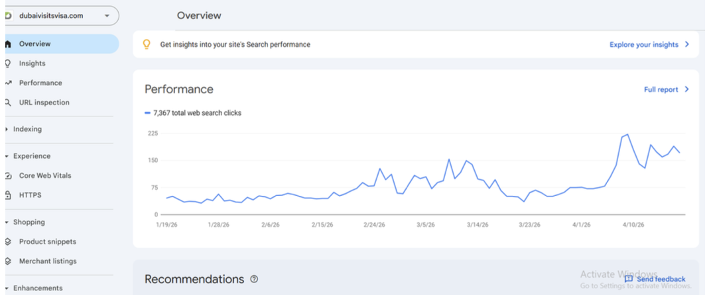

Performance Trend
Traffic Growth Momentum
This overview graph shows 7,367 total web search clicks with a clear upward trend from late February to mid-April. The pattern highlights how content optimization and on-page SEO work helped increase visibility and sustain stronger traffic growth.